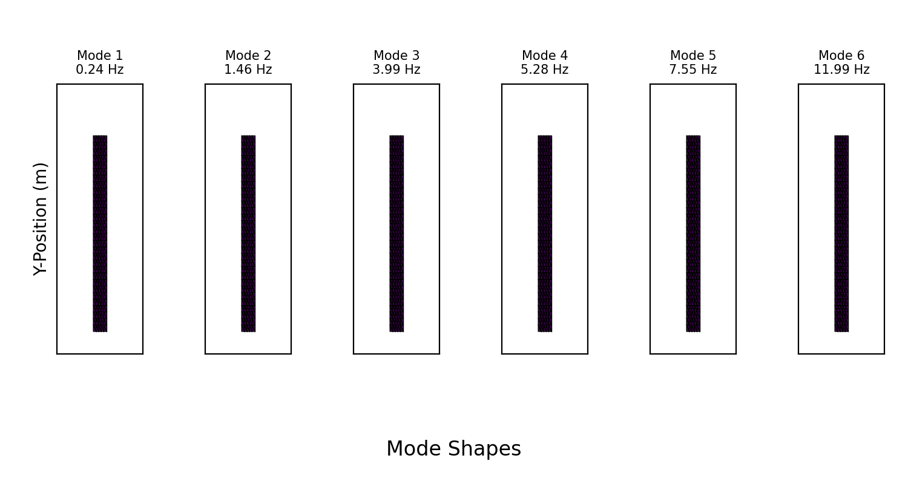
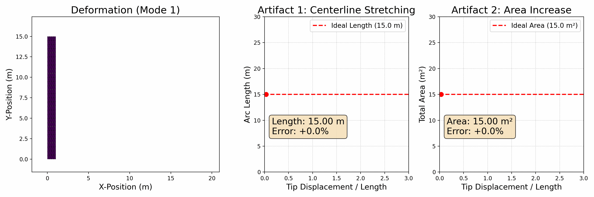

Linear Modal Analysis Demo*
We implemented the linear modal analysis procedure for a 2D cantilever beam in solid-sim-tutorial/9_reduced_DOF/linear.py.
Visualizing the Mode Shapes
Following the precomputation steps outlined in the methodology, we used the Finite Element Method to assemble the global mass () and stiffness () matrices. After applying fixed boundary conditions to one end of the beam, we solved the generalized eigenvalue problem () to find the lowest-frequency mode shapes () and their corresponding frequencies ().
The resulting modes were visualized by animating the beam's deformation according to . The animation below displays the first six modes for the following parameter values:
E = 5e7 # Young's modulus
nu = 0.3 # Poisson's ratio
rho = 500 # Density
# Height : length ratio = 1 : 15

Artifacts of Large Deformations
The primary limitation of linear modal analysis is that it produces visible artifacts when undergoing large deformations. To demonstrate this, we designed a second experiment focused exclusively on the first bending mode.
In this experiment, we animate the beam deforming from its rest state to a state of large deflection. Alongside the deforming beam, we plot two key metrics in real-time:
- Centerline Arc Length: For a real, inextensible object, the length of its centerline should remain constant during pure bending.
- Total Area (2D Volume): For a nearly incompressible material, the total area should also be preserved.
As the tip displacement increases, the linear model incorrectly predicts that (1) the beam's centerline stretches significantly, and (2) its total area increases significantly..

These artifacts occur because the linear model cannot account for the geometric nonlinearities that arise from large rotations. This failure is the primary motivation for the methods described in the following section, which are designed specifically to overcome these limitations and accurately simulate large, physically plausible motions.